DDS ReDO 사용 매뉴얼
DDS ReDO는 적은 실험으로 공정 레시피를 찾도록 돕는 앱입니다. 실험 결과를 넣으면 앱이 학습해서 추천 레시피와 다음에 할 실험을 알려 줍니다. 통계를 몰라도 됩니다. 앱이 정해 준 조건으로 실험하고 결과만 입력하면 됩니다.
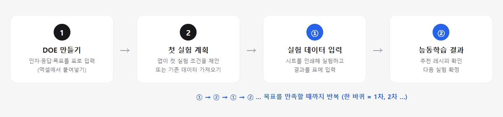
그림 위의 주황색 번호는 본문의 번호와 같습니다. 화면의 예시는 앱에 들어 있는 데모 DOE(CMP 슬러리 배합, Poly-Si 식각)와 새로 만든 "Cu 도금 조건 최적화"입니다.
1. 시작하기
사내 계정으로 로그인합니다. 로그인하면 원래 열려던 화면(예: 공유받은 링크)으로 바로 이동합니다.
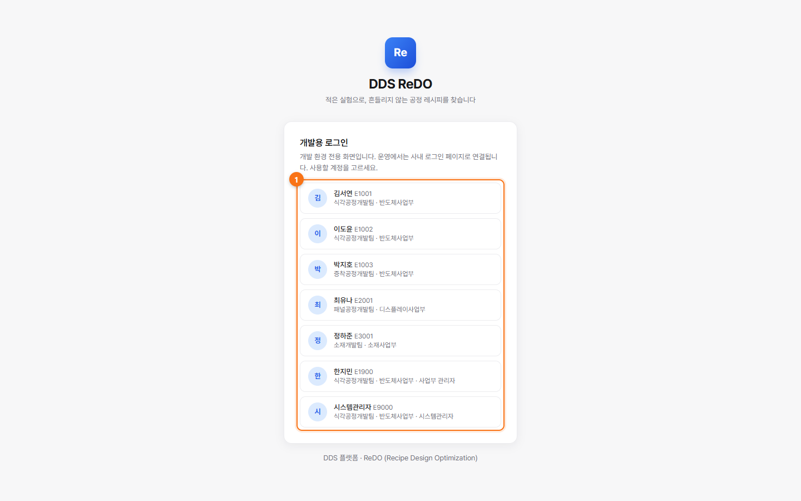
- 개발·시험 환경에서는 사용자를 골라 들어갑니다. 실제 서비스에서는 사내 로그인 화면으로 연결됩니다.
2. 첫 화면 둘러보기
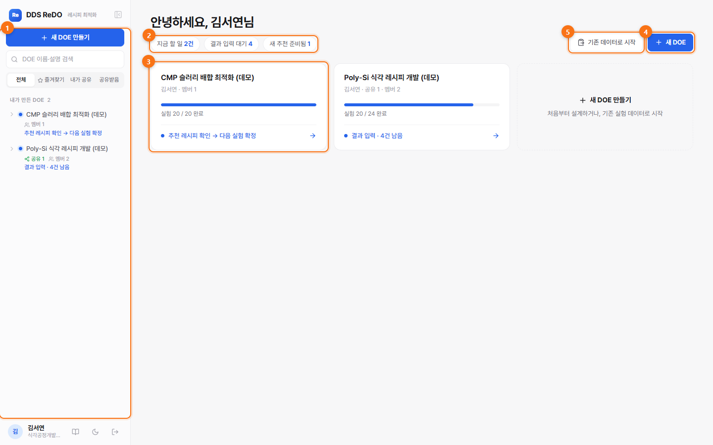
| 번호 | 이름 | 하는 일 |
|---|---|---|
| 1 | DOE 목록 (사이드바) | 내가 만든 DOE, 함께하는 DOE, 공유받은 예측이 모두 여기 있습니다. 파란 점(●)이 붙은 DOE는 내가 할 일이 있는 DOE입니다. 이름을 누르면 설정, 펼치면 ①·② 단계로 바로 갈 수 있습니다. |
| 2 | 할 일 요약 | 지금 할 일, 결과 입력을 기다리는 실험 수, 새 추천이 준비된 DOE 수 |
| 3 | DOE 카드 | 진행 막대와 "다음에 할 일"이 보입니다. 카드를 누르면 할 일이 있는 단계로 바로 갑니다. |
| 4 | 새 DOE | 처음부터 새 DOE를 만듭니다 (3장). |
| 5 | 기존 데이터로 시작 | 이미 해 둔 실험 결과(엑셀 표)로 DOE를 만듭니다 (3-2). |
DOE(Design of Experiments, 실험계획)는 여기서 "레시피를 찾는 프로젝트 하나"를 뜻합니다.
이 매뉴얼 다시 보기: 사이드바 아래 📖 사용 매뉴얼 버튼을 누르면 새 창으로 열립니다. DOE 화면 오른쪽 위의 도움말을 누르면 지금 보고 있는 화면의 설명으로 바로 갑니다.
3. 새 DOE 만들기
한 페이지에서 모두 입력합니다. 표는 엑셀처럼 동작하고, 엑셀 표를 복사해서 한 번에 붙여넣을 수 있습니다.
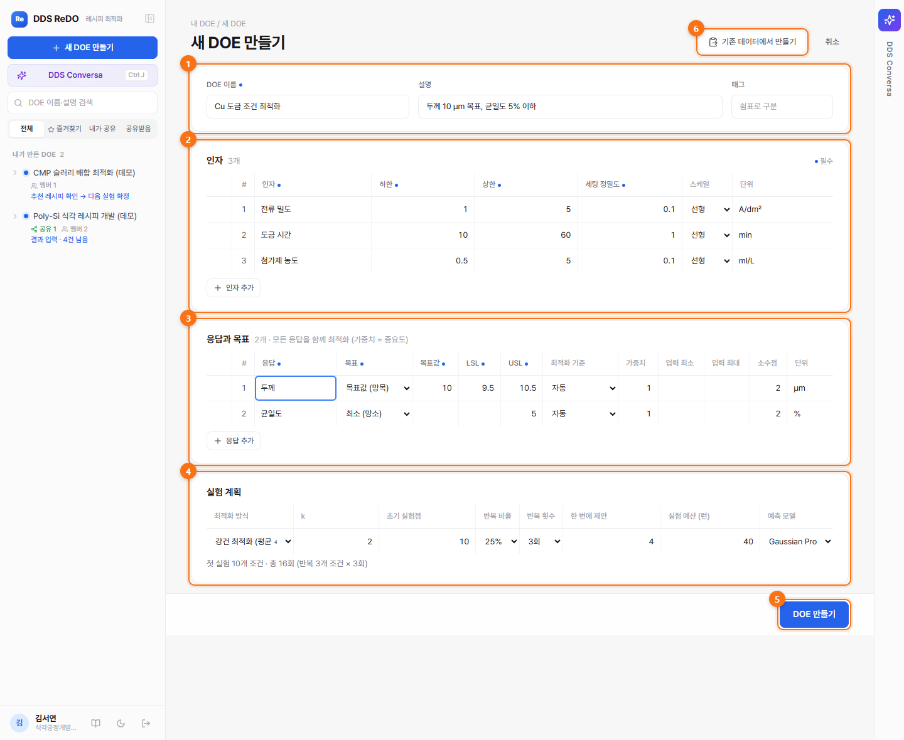
| 번호 | 항목 | 설명 |
|---|---|---|
| 1 | 기본 정보 | DOE 이름(필수), 설명, 태그 |
| 2 | 인자 | 바꿔 볼 조건 (예: 전류 밀도, 도금 시간) |
| 3 | 응답과 목표 | 측정할 결과와 목표 (예: 두께 10 μm, 균일도 5% 이하) |
| 4 | 실험 계획 | 첫 실험 수, 반복 측정, 한 번에 제안받을 실험 수, 실험 예산 |
| 5 | DOE 만들기 | 저장합니다. 빠진 칸이 있으면 빨갛게 표시됩니다. |
| 6 | 기존 데이터에서 만들기 | 엑셀 데이터에서 인자·응답을 자동으로 채웁니다 (3-2). |
머리글 옆의 파란 점(●)은 꼭 채워야 하는 칸입니다.
3-1. 표의 칸 설명
인자 표
| 칸 | 뜻 | 예 |
|---|---|---|
| 인자 ● | 조건 이름 | 전류 밀도 |
| 하한 ● · 상한 ● | 실험할 수 있는 범위 | 1 ~ 5 |
| 세팅 정밀도 ● | 장비에서 실제로 맞출 수 있는 최소 단위. 앱이 제안하는 값은 이 단위로 반올림됩니다. | 0.1 |
| 스케일 | 값이 10배씩 차이 나는 인자(농도 등)는 로그 | 선형 |
| 단위 | 표시용 | A/dm² |
응답과 목표 표
| 칸 | 뜻 |
|---|---|
| 응답 ● | 측정 항목 이름 |
| 목표 ● | 최대(망대): 클수록 좋음 · 최소(망소): 작을수록 좋음 · 목표값(망목): 특정 값에 맞출수록 좋음 |
| 목표값 | 망목일 때 맞추려는 값 (망목이면 필수) |
| LSL · USL | 규격 하한·상한. 있으면 "규격 안에 들 확률"로 평가합니다. |
| 최적화 기준 | 보통 자동으로 두세요. 규격이 있으면 규격 만족 확률, 없으면 평균과 산포를 함께 봅니다. |
| 가중치 | 응답이 여러 개일 때 중요도 (기본 1, 0이면 관찰만) |
| 입력 최소 · 최대 | 결과를 입력할 때 오타를 잡는 범위 (예: 82를 820으로 잘못 친 경우) |
| 소수점 | 결과 표시 자리수 |
팁: 엑셀에서 붙여넣기 엑셀에서 머리글 행까지 복사한 뒤, 표의 첫 칸을 누르고 Ctrl+V 하세요. 머리글 이름으로 열을 찾아 넣으므로 엑셀의 열 순서가 달라도 됩니다. 행이 모자라면 자동으로 늘어납니다. 목표 칸에는 "망대", "망소", "망목", "최대" 같은 글자를 그대로 붙여넣어도 됩니다.
3-2. 기존 데이터에서 만들기
이미 해 둔 실험 결과가 엑셀에 있다면, 표를 붙여넣기만 하면 인자·응답 설정을 앱이 채워 줍니다.
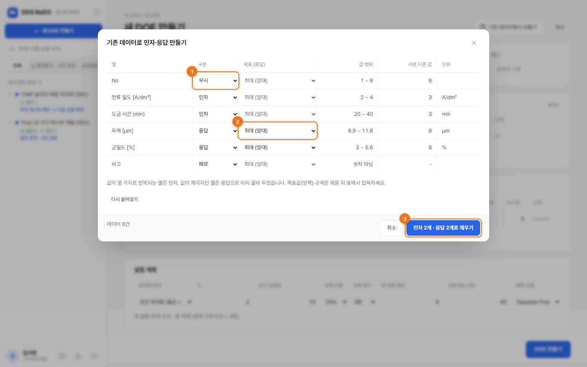
- 구분: 열마다 인자 / 응답 / 메모 / 무시를 고릅니다. 앱이 미리 골라 둡니다. 값이 몇 가지로 반복되는 열은 인자, 값이 제각각인 열은 응답, "No"나 "비고" 같은 열은 무시나 메모로 고릅니다.
- 목표: 응답 열의 목표(최대/최소/목표값)를 고릅니다.
- 채우기: 누르면 인자 범위(데이터의 최소~최대), 세팅 정밀도(소수 자리), 단위가 자동으로 채워집니다. 목표값이나 규격(LSL·USL)은 채운 뒤 표에서 입력하세요.
이렇게 만든 DOE는 DOE 만들기 + 데이터 N건 가져오기 버튼 한 번으로 생성과 데이터 가져오기가 함께 끝나고, 바로 ② 능동학습 결과로 이동합니다.
4. 첫 실험 정하기
DOE를 만들면 어떻게 시작할지 고르는 화면이 나옵니다.
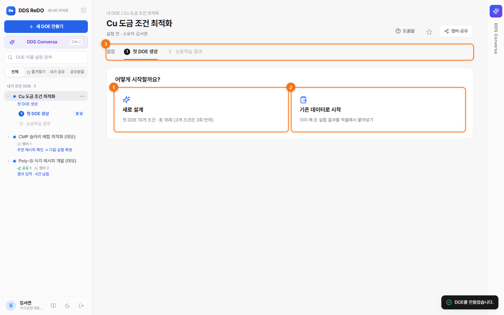
- 새로 설계: 앱이 인자 범위 전체를 고르게 살펴보는 첫 실험 조건을 만들어 줍니다. 일부 조건은 일부러 2~3번 반복합니다(반복해야 산포를 알 수 있기 때문).
- 기존 데이터로 시작: 이미 해 둔 실험 결과를 붙여넣어 시작합니다.
- DOE 안의 화면은 위쪽 탭으로 오갑니다: 설정 · ① 실험 데이터 입력 · ② 능동학습 결과.
기존 데이터 가져오기
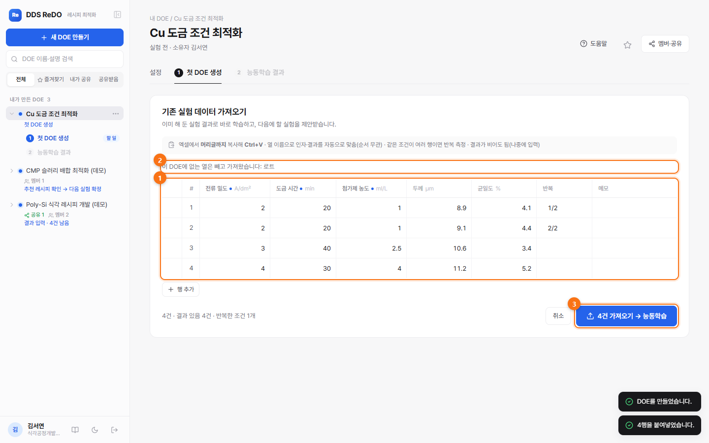
- 엑셀 표를 머리글까지 복사해 Ctrl+V 하면 열 이름으로 인자·결과를 찾아 넣습니다. 같은 조건이 여러 행이면 반복(1/2, 2/2)으로 표시합니다.
- DOE에 없는 열(예: 로트 번호)은 빼고 가져오며, 무엇을 뺐는지 알려 줍니다.
- 가져오기를 누르면 "0차" 실험으로 저장됩니다(런 ID
0차-01…). 이후 앱이 제안하는 실험은 1차부터입니다.
- 인자 값은 반올림하지 않고 실제로 세팅한 값 그대로 학습합니다.
- 설정 범위 밖의 값이 있으면 범위 넓히기 또는 범위 밖 행 빼기를 고를 수 있습니다.
- 이미 DOE에 있는 실험과 똑같은 행은 중복으로 알려 줍니다. 같은 데이터를 두 번 넣으면 반복 측정으로 잘못 학습되니 중복 행 빼기를 누르세요.
- 결과가 빈 행도 가져올 수 있습니다. 나중에 ① 화면에서 채우면 됩니다.
5. 실험 데이터 입력
이번 차수에 할 실험 목록이자 결과 입력 표입니다.
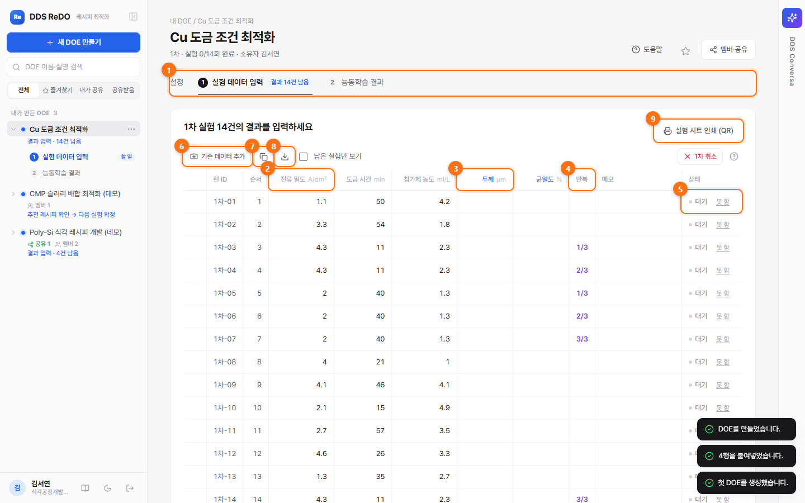
| 번호 | 이름 | 설명 |
|---|---|---|
| 1 | 단계 탭 | 남은 결과 수가 함께 보입니다 ("결과 14건 남음"). |
| 2 | 조건 칸 | 실험할 조건. 실제로 다르게 세팅했다면 그대로 고쳐 쓰면 됩니다(노란색으로 표시, 학습에는 실제 값을 씁니다). |
| 3 | 결과 칸 | 측정값을 입력합니다. |
| 4 | 반복 | 같은 조건을 여러 번 하는 실험은 1/3(3번 중 첫 번째)처럼, 지난 차수의 조건을 다시 하면 재확인으로 표시합니다. |
| 5 | 상태 | 결과를 모두 넣으면 자동으로 완료. 실험을 못 했으면 못 함을 누릅니다. |
| 6 | 기존 데이터 추가 | 예전에 해 둔 실험 결과를 더 넣습니다. |
| 7 | 표 일괄 복사 | 표 전체를 머리글과 함께 복사합니다 (엑셀에 붙여넣기). |
| 8 | 엑셀 파일로 다운로드 | 표를 .xlsx 파일로 받습니다 (DOE 설정 시트 포함). |
| 9 | 실험 시트 인쇄 | 현장에서 쓸 A4 시트를 인쇄합니다. |
- 런 ID
1차-03은 "1차 실험의 3번째 런"이라는 뜻입니다. 순서는 실험할 순서(무작위)입니다. 순서대로 하면 시간에 따른 장비 변화가 결과에 섞이는 것을 줄일 수 있습니다. - 행 맨 앞의 휴지통은 마우스를 올리면 보입니다. 지운 런은 표와 학습에서 빠지지만, 기록은 남아 복구할 수 있습니다.
- 표 오른쪽 위 ? 에 사용법이 요약되어 있습니다.
5-1. 실험 시트 인쇄
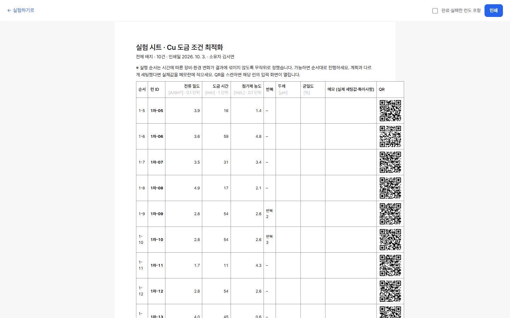
런마다 조건과 결과를 적는 칸, QR 코드가 있습니다. 태블릿이나 휴대폰으로 QR을 찍으면 그 런의 입력 화면이 바로 열려 현장에서 결과를 넣을 수 있습니다.
5-2. 결과 넣기 (직접 입력 또는 엑셀 붙여넣기)
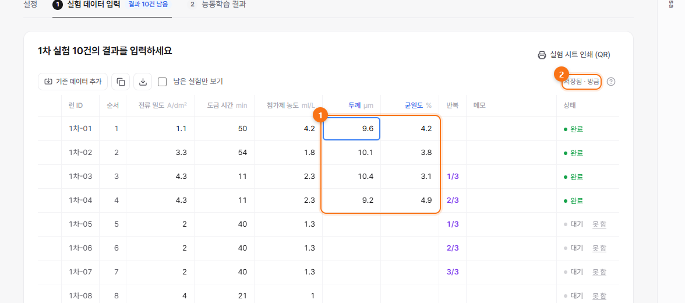
- 결과 칸을 누르고 입력한 뒤 Enter를 누르면 아래 칸으로 내려갑니다. 엑셀에서 여러 칸을 복사해 Ctrl+V 하면 한 번에 들어갑니다.
- 머리글이나 런 ID 열을 같이 복사해도 됩니다. 앱이 알맞은 행·열을 찾아 넣습니다(예전 형식
B1-02도 인식).
- 머리글이나 런 ID 열을 같이 복사해도 됩니다. 앱이 알맞은 행·열을 찾아 넣습니다(예전 형식
- 입력하면 자동 저장됩니다. "저장됨"이 보이면 끝입니다. 네트워크가 끊겨도 입력은 이 브라우저에 임시 보관되고, 다시 연결되면 저장됩니다.
입력 칸 색의 뜻:
| 색 | 뜻 | 어떻게 하나요 |
|---|---|---|
| 빨간 칸 | 숫자가 아님 → 저장 안 됨 | 값을 고치세요 |
| 노란 칸 | 입력 허용 범위 밖이거나 예측과 크게 다름 → 저장은 됨 | 값과 단위를 한 번 더 확인하세요 (진짜 발견일 수도 있습니다) |
| 노란 글자(조건 칸) | 계획과 다르게 세팅함 | 실제 세팅값이면 그대로 두세요 |
5-3. 못 한 실험 표시
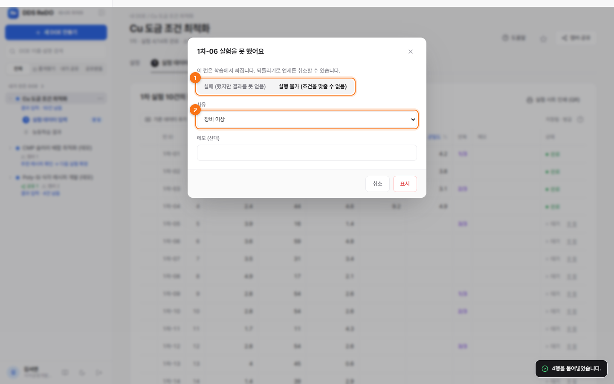
못 함을 누르면 이 창이 뜹니다.
- 실패(실험은 했지만 결과를 못 얻음) 또는 실행 불가(그 조건을 맞출 수 없음)를 고릅니다.
- 사유를 고르고 필요하면 메모를 남깁니다.
이 런은 학습에서 빠집니다. 실수로 눌렀다면 상태 칸의 되돌리기를 누르세요.
5-4. 표의 일부만 복사하기
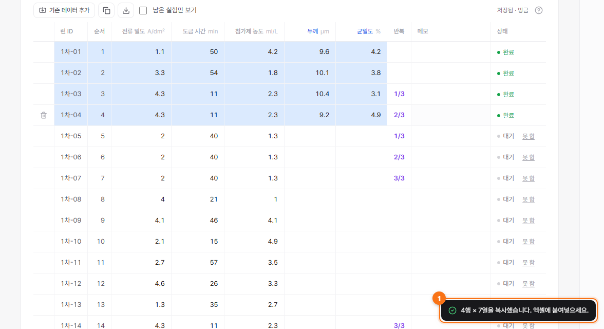
칸을 누른 채 끌면 여러 행·열을 고를 수 있습니다(Shift+클릭도 가능, 머리글을 누르면 그 열 전체). Ctrl+C를 누르면 고른 칸만 복사되어 엑셀에 바로 붙여넣을 수 있습니다(1). 범위를 고른 채 Ctrl+V 하면 그 범위의 왼쪽 위 칸부터 붙여넣습니다. Esc를 누르면 선택이 풀립니다.
결과를 다 넣었으면 오른쪽 아래 다음: 능동학습 → 을 누르세요. 결과가 일부만 들어가 있어도 넘어갈 수 있습니다(빈 실험은 학습에서 빠지고, 다음 제안은 그 조건과 겹치지 않게 고릅니다).
6. 능동학습 결과
앱이 지금까지의 결과로 학습해서 추천 레시피와 다음에 할 실험을 보여 줍니다.
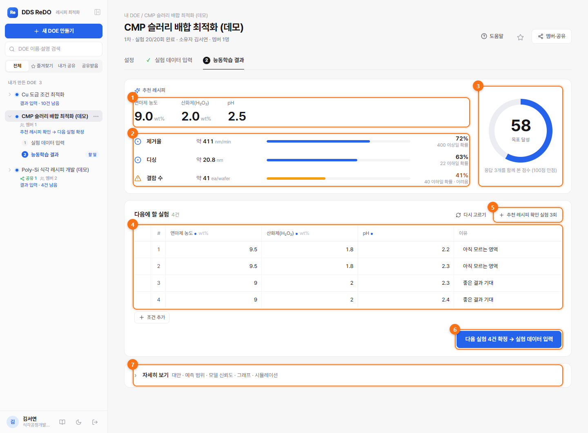
| 번호 | 이름 | 읽는 법 |
|---|---|---|
| 1 | 추천 레시피 | 지금까지 학습한 결과로 가장 좋다고 예측되는 조건입니다. |
| 2 | 응답별 예상 | 그 조건에서의 예상값과 규격 안에 들 확률. 막대가 길수록 좋고, 확률이 낮은 응답은 주황색과 ⚠로 표시됩니다. |
| 3 | 목표 달성 점수 | 모든 응답을 함께 본 점수(100점 만점). 응답끼리 서로 충돌하면(예: 제거율↑ ↔ 결함↓) 100점이 어려울 수 있습니다. |
| 4 | 다음에 할 실험 | 앱이 고른 다음 실험 조건입니다. 엑셀처럼 고치거나 붙여넣을 수 있고, 조건 추가로 직접 넣을 수도 있습니다. |
| 5 | 추천 레시피 확인 실험 3회 | 추천 레시피를 3번 반복하는 실험을 목록에 더합니다. 예측대로 재현되는지 확인할 때 씁니다. |
| 6 | 확정 | 목록을 다음 차수 실험으로 확정하고 ① 화면으로 갑니다. |
| 7 | 자세히 보기 | 예측 범위, 다른 선택지, 모델 신뢰도, 그래프, 조건 시뮬레이션 |
다음 실험의 "이유"
- 좋은 결과 기대: 더 좋은 레시피가 있을 것 같은 곳
- 아직 모르는 영역: 데이터가 부족해 확인이 필요한 곳
- 반복 측정: 같은 조건에서 얼마나 흔들리는지(산포)를 알기 위한 반복
실험이 적을 때는 "아직 실험이 적어 예측이 정확하지 않을 수 있습니다"가 표시됩니다. 이때의 추천은 후보로만 보고, 다음 실험을 하면서 좁혀 가세요.
6-1. 자세히 보기
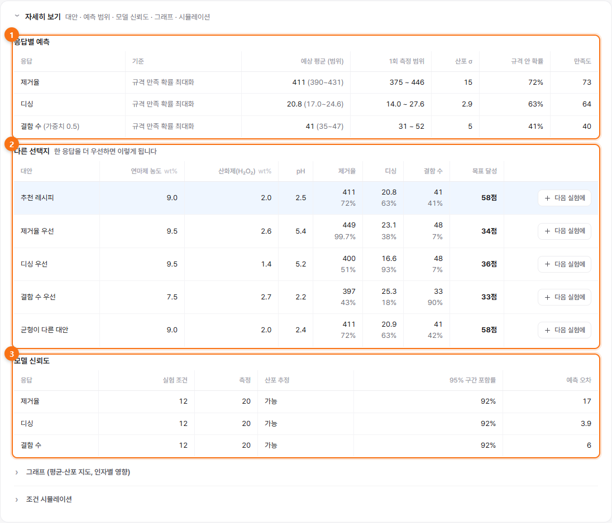
- 응답별 예측
- 예상 평균 (범위): 평균이 있을 법한 범위
- 1회 측정 범위: 한 번 측정했을 때 나올 수 있는 값의 범위 (산포 포함)
- 산포 σ: 같은 조건에서 반복했을 때 흔들리는 정도
- 다른 선택지: 한 응답을 더 우선하면 레시피가 어떻게 달라지는지 보여 줍니다. 다음 실험에를 누르면 그 조건을 다음 실험 목록에 넣습니다.
- 모델 신뢰도: 예측이 실제 결과를 얼마나 잘 맞히는지 스스로 점검한 결과입니다. 95% 구간 포함률이 크게 낮으면 ⚠와 함께 안내가 나옵니다(실험을 더 하거나 범위를 확인하세요).
6-2. 그래프
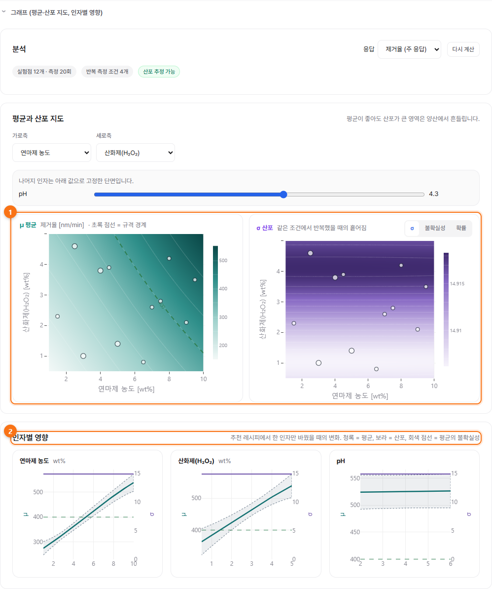
- 평균 지도(청록)와 산포 지도(보라)를 나란히 보여 줍니다. 가로·세로축 인자를 고르고, 나머지 인자는 슬라이더로 정합니다. 점은 실제 실험한 조건이고, 초록 점선은 규격 경계입니다.
- 평균이 좋아도 산포가 큰 영역(보라가 진한 곳)은 양산에서 결과가 흔들립니다. 두 지도를 함께 보세요.
- 산포 지도 오른쪽 위에서 불확실성(아직 데이터가 부족한 정도)과 확률(규격 만족 확률) 지도로 바꿀 수 있습니다.
- 인자별 영향: 추천 레시피에서 인자 하나만 바꿨을 때 평균(청록)과 산포(보라)가 어떻게 변하는지 보여 줍니다.
6-3. 조건 시뮬레이션
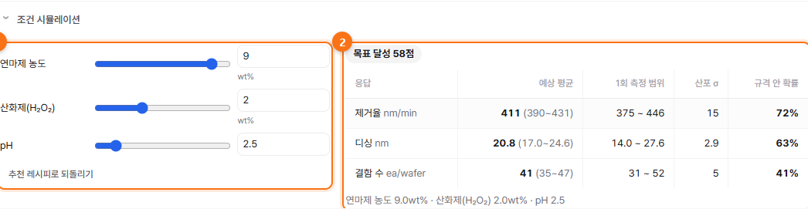
- 슬라이더나 숫자로 조건을 바꿔 보세요.
- 모든 응답의 예상값, 규격 확률, 목표 달성 점수가 바로 계산됩니다. 실험한 범위 밖이면 "외삽" 경고가 붙습니다.
7. 반복하고 마무리하기
② 확정 → ① 실험·입력 → ② 결과 확인을 반복하면 1차, 2차, 3차…로 쌓이며 추천이 점점 정확해집니다.
멈출 때를 고르는 기준(결정은 사용자가 합니다):
- 목표 달성 점수가 충분히 높고, 몇 차수 동안 크게 오르지 않는다
- 응답별 규격 확률이 원하는 수준이다
- 실험 예산을 다 썼다
마무리할 때는 추천 레시피 확인 실험 3회를 넣어 예측대로 재현되는지 꼭 확인하세요. 끝난 DOE는 사이드바 DOE 이름 옆 ⋯ 메뉴에서 완료로 표시하거나 보관합니다(아래 "DOE 메뉴").
설정 바꾸기: DOE 이름을 누르거나 설정 탭에서 언제든 바꿀 수 있습니다. 실험 데이터가 있어도 인자를 추가할 수 있습니다. 이때 그동안 그 인자를 어떤 값에 고정해 두었는지 "기존 실험 값"을 입력합니다. 바꾼 내용은 변경 이력 보기에 남습니다.
8. 함께 쓰기: 멤버와 공유
DOE 머리글 오른쪽의 멤버·공유를 누릅니다.
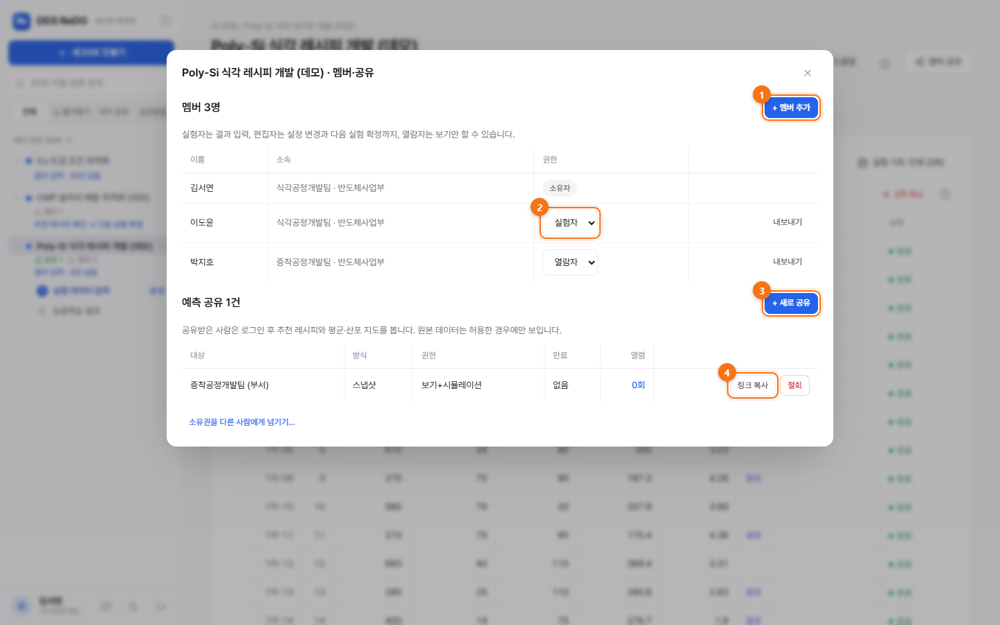
- 멤버 추가: 함께 일할 사람을 검색해 추가합니다.
- 권한: 멤버마다 바꿀 수 있습니다.
- 새로 공유: 추천 레시피와 지도를 다른 사람·부서에 보여 줍니다(예측 페이지 공유).
- 링크 복사: 공유 링크를 복사해 메신저로 보냅니다. 철회를 누르면 즉시 볼 수 없게 됩니다.
| 권한 | 할 수 있는 일 |
|---|---|
| 소유자 | 모든 일, 멤버·공유 관리, 삭제, 소유권 넘기기 |
| 편집자 | 설정 변경, 다음 실험 확정, 결과 입력 |
| 실험자 | 결과 입력, 못 함 표시, 메모 |
| 열람자 | 보기만 |
예측 페이지 공유하기
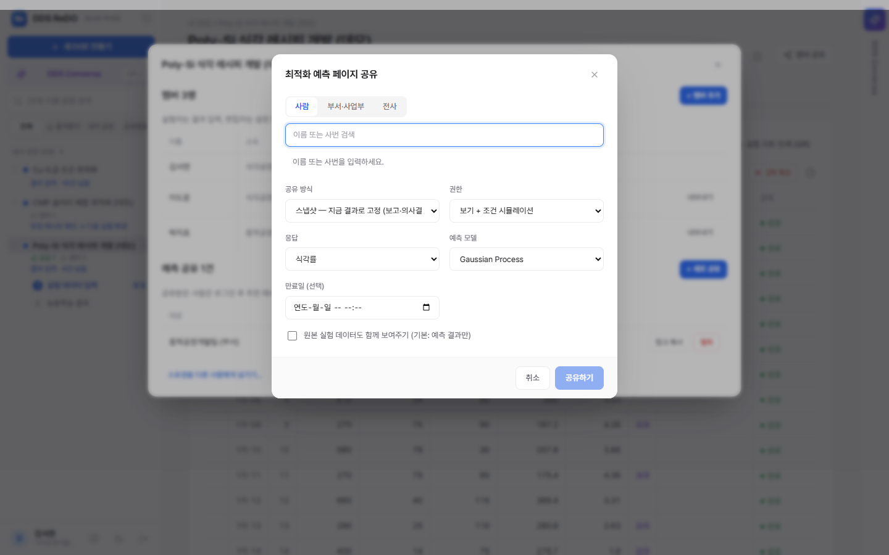
- 대상: 위쪽 탭에서 사람 / 부서·사업부 / 전사를 고르고, 이름이나 사번으로 검색합니다.
- 공유 방식: 스냅샷(지금 결과로 고정 — 보고·의사결정용, 기본값) 또는 실시간(항상 최신 결과)
- 권한: 보기만 / 보기 + 조건 시뮬레이션
- 응답 · 예측 모델: 공유 페이지에서 보여 줄 응답과 예측 모델
- 만료일(선택): 정하지 않으면 철회할 때까지 볼 수 있습니다.
- 원본 실험 데이터도 함께 보여주기: 기본은 꺼져 있습니다(예측 결과만 공유).
공유받은 사람이 보는 화면
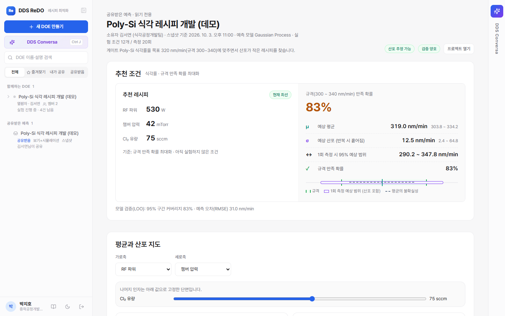
공유받은 사람은 로그인한 뒤 사이드바의 공유받은 예측이나 링크로 들어옵니다. 읽기 전용이며, 추천 조건, 예상 평균·산포, 규격 만족 확률, 지도를 볼 수 있습니다. 공유 대상이 아닌 사람이 링크를 열면 "접근 권한이 없습니다"와 접근 요청 버튼이 보입니다.
DOE 메뉴 (즐겨찾기 · 복제 · 완료·보관 · 삭제)
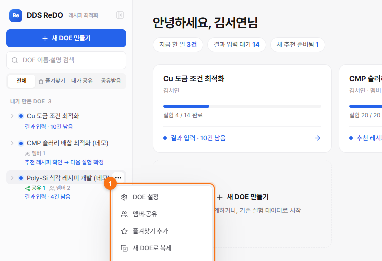
사이드바의 DOE 이름 옆 ⋯ 을 누르거나 DOE를 마우스 오른쪽 버튼으로 누르면 메뉴가 열립니다.
- 즐겨찾기: 목록 맨 위 "즐겨찾기" 묶음에 표시됩니다.
- 새 DOE로 복제: 인자·응답 설정만 복사해 새 DOE를 시작합니다(실험 데이터는 복사하지 않음).
- 완료로 표시 / 보관(편집자 이상): 완료하면 DOE 제목 아래에 "완료"가 붙습니다. 보관하면 첫 화면에서 빠지고 사이드바에는 흐리게 남습니다. 메뉴에서 진행 중으로 되돌리기, 보관 해제로 언제든 되돌릴 수 있습니다.
- 삭제(소유자만): 멤버와 공유받은 사람도 더 이상 볼 수 없습니다. 서버에는 일정 기간 보관되므로, 실수로 지웠다면 그 기간 안에 관리자에게 복구를 요청하세요.
9. 화면 꾸미기: 사이드바·다크 모드
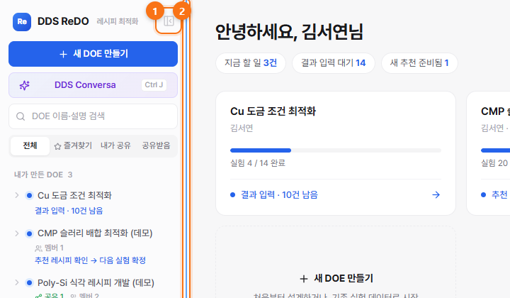
- 사이드바 접기: 표가 넓을 때 사이드바를 접어 작업 공간을 넓힙니다. 단축키 Ctrl+B.
- 너비 조절: 사이드바 오른쪽 가장자리를 끌어서 넓히거나 좁힙니다. 두 번 누르면 기본 너비로 돌아갑니다.
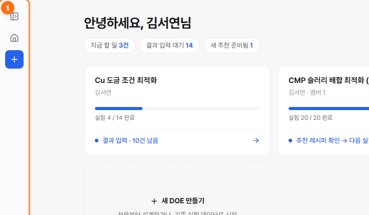
- 접으면 아이콘만 남습니다(펼치기 · 첫 화면 · 새 DOE · 화면 모드). 펼치기 버튼이나 Ctrl+B로 다시 펼칩니다.
다크 모드
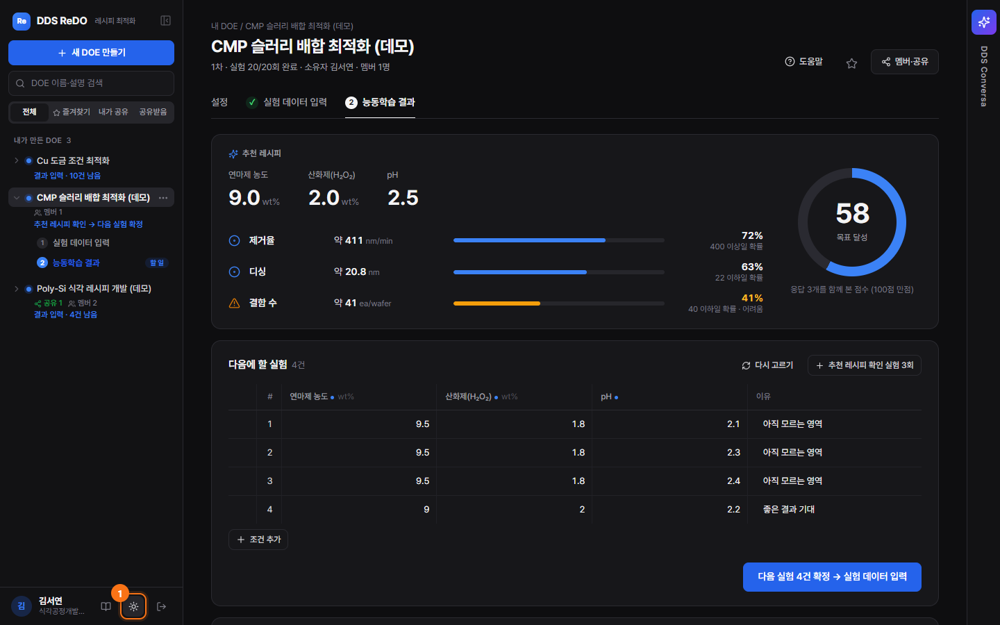
- 사이드바 아래 ☀/☾ 버튼으로 밝은 화면과 어두운 화면을 바꿉니다. 처음에는 컴퓨터(OS) 설정을 따르고, 한 번 바꾸면 이 브라우저에 기억됩니다.
사이드바 너비·접힘·화면 모드는 이 브라우저에만 저장됩니다. 다른 PC에서는 다시 정해야 합니다.
10. DDS Conversa: 말로 조작하기
DDS Conversa는 사내 LLM으로 동작하는 AI 도우미입니다. 화면을 찾아 누르는 대신 말로 요청하면 앱이 대신 처리합니다. 대화 내용과 실험 데이터는 사내 LLM으로만 보내고 외부로 나가지 않습니다. 내 권한 안의 일만 할 수 있습니다.
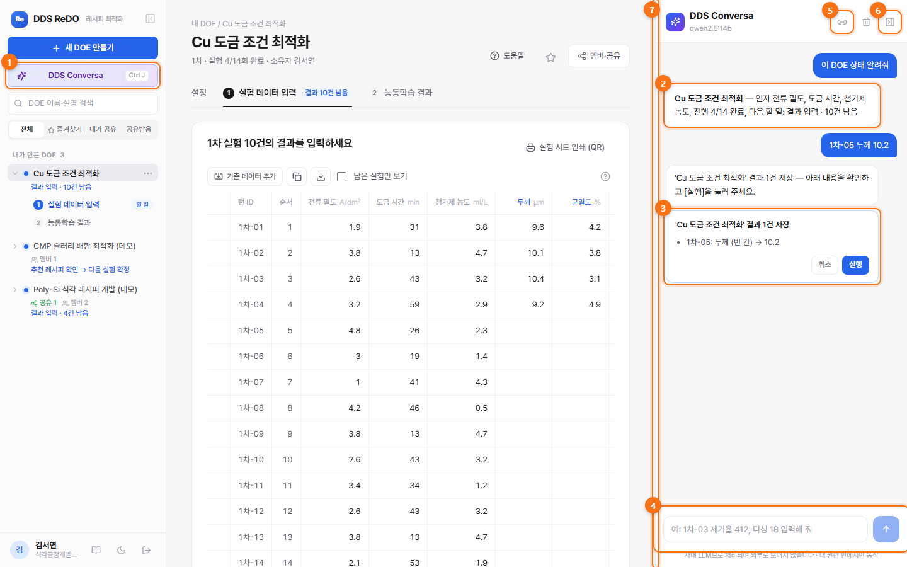
- 화면 오른쪽 끝의 ✦ 아이콘 막대를 누르거나 Ctrl+J를 누르면 오른쪽 사이드바가 펼쳐집니다. 본문을 가리지 않고 옆에 붙어 있어, 실험 표를 보면서 요청할 수 있습니다.
- 조회 요청에는 바로 답합니다. 예: "이 DOE 상태 알려 줘", "추천 레시피를 쉽게 설명해 줘", "남은 실험 보여 줘"
- 데이터를 바꾸는 요청에는 확인 카드가 뜹니다. 무엇이 어떻게 바뀌는지 보고 실행을 눌러야 저장됩니다(취소를 누르면 아무것도 바뀌지 않음). 실행하면 열려 있는 화면도 바로 바뀝니다.
- 요청을 입력하고 Enter를 누르세요(줄바꿈은 Shift+Enter). 지금 보고 있는 DOE는 따로 말하지 않아도 됩니다.
- MCP 연결: 사내 에이전트·IDE 같은 다른 도구에서 DDS ReDO를 쓰도록 연결합니다(아래).
- 대화 목록: 지난 대화를 다시 불러옵니다(아래).
- 새 대화: 빈 대화를 시작합니다. 지금까지의 대화는 지워지지 않고 목록에 남습니다.
- 접기: 아이콘 막대로 접습니다(Ctrl+J로 다시 펼침).
- 너비 조절: 왼쪽 가장자리를 끌어 넓히거나 좁힙니다(320~720px, 두 번 누르면 기본 너비). 너비와 접힘 상태는 이 브라우저에 기억됩니다.
이렇게 말해 보세요
| 하고 싶은 일 | 예시 |
|---|---|
| 상태·목록 보기 | "내 DOE 목록 보여 줘", "지금 할 일이 뭐야?", "CMP 슬러리 진행 상황 알려 줘" |
| 결과 입력 | "1차-03 제거율 412, 디싱 18 입력해 줘", "1차-07은 장비 고장으로 실패 처리해 줘" |
| 추천·예측 | "추천 레시피 설명해 줘", "연마제 9, 산화제 2, pH 3이면 어떻게 돼?" |
| 다음 실험 | "다음 실험 4건 제안해 줘", "그대로 다음 실험으로 확정해 줘" |
| 만들기·가져오기 | "전류 1 |
| 사용법 | "결과를 엑셀에서 한꺼번에 붙여넣는 방법은?", "산포가 뭐야?" |
| 관리 (두 번 확인) | "이도윤을 실험자로 추가해 줘", "증착공정개발팀에 예측 공유해 줘", "1차-06 지워 줘", "이 DOE 삭제해 줘" |
되돌리기 어려운 작업은 한 번 더 확인합니다
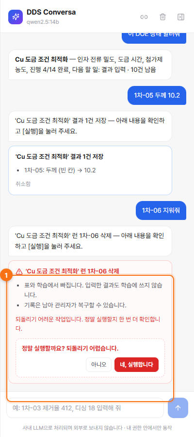
- 삭제, 공유, 멤버 추가·변경·내보내기, 소유권 넘기기는 빨간 카드로 표시됩니다. 실행을 누르면 "정말 실행할까요? 되돌리기 어렵습니다."가 한 번 더 나오고, 네, 실행합니다를 눌러야 실행됩니다.
- 확인 카드는 10분 동안만 유효하고, 한 번만 실행됩니다.
- AI 도우미로 바꾼 내용은 변경 이력에 "AI 도우미를 통해" 한 것으로 남습니다.
- 답이 이상하면 화면에서 직접 확인하세요. AI 도우미는 도구로 확인한 값만 말하도록 되어 있지만, 실수할 수 있습니다.
지난 대화 다시 보기
대화는 내 계정에 자동으로 저장됩니다. 창을 닫거나 새로고침해도, 다른 PC에서 로그인해도 그대로 이어서 쓸 수 있습니다. 다른 사람은 내 대화를 볼 수 없습니다.
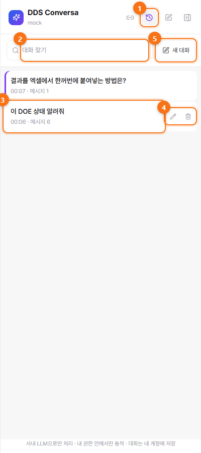
- 대화 목록 아이콘을 누르면 내 대화가 최근 순으로 나옵니다. 한 번 더 누르면 대화로 돌아갑니다.
- 대화 찾기: 제목으로 찾습니다. 제목은 첫 질문으로 자동으로 붙습니다.
- 대화를 누르면 그 대화를 불러와 이어서 요청할 수 있습니다. 앞에서 한 이야기를 기억하고 답합니다.
- 마우스를 올리면 이름 바꾸기(연필)와 삭제(휴지통)가 나옵니다. 삭제는 한 번 더 삭제를 눌러야 지워집니다.
- 새 대화: 빈 대화를 시작합니다.
- 확인 카드를 실행했는지, 취소했는지도 대화에 함께 남습니다. 10분이 지난 확인 카드는 "확인 시간이 지났습니다"로 바뀌니, 필요하면 다시 요청하세요.
MCP 연결 (사내 에이전트·IDE에서 쓰기)
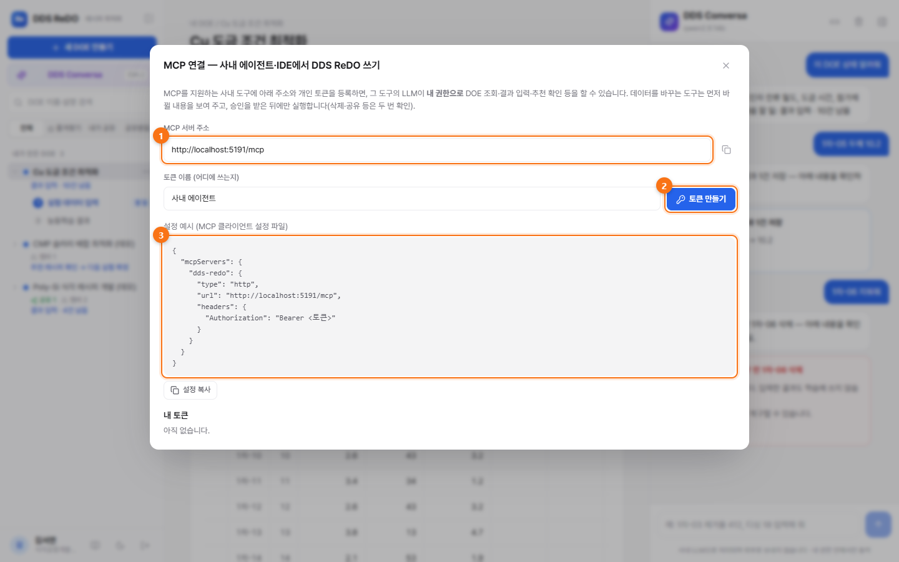
- MCP 서버 주소: MCP를 지원하는 사내 도구에 등록할 주소입니다.
- 토큰 만들기: 그 도구가 내 권한으로 접속할 개인 토큰을 만듭니다. 토큰은 만들 때 한 번만 보여 주니 안전한 곳에 보관하세요. 남과 나누지 말고, 필요 없으면 폐기하세요(즉시 접속 불가).
- 설정 예시: MCP 클라이언트 설정 파일에 붙여넣을 내용입니다(토큰을 만들면 자동으로 채워짐).
사내 LLM이 아직 등록되지 않았으면 대화창에 안내가 나옵니다. 관리자가 서버 설정에 LLM 주소와 모델 이름을 넣으면 바로 쓸 수 있습니다(README 참고). MCP 연결은 LLM 등록과 상관없이 쓸 수 있습니다.
11. 자주 묻는 질문 · 용어
Q. 엑셀 파일을 올릴 수는 없나요? 사내 보안 프로그램 때문에 업로드한 엑셀·CSV 파일은 읽을 수 없습니다. 엑셀에서 복사 → 앱에서 Ctrl+V 하세요. 앱에서 엑셀로 가져갈 때는 표 복사(Ctrl+C) 또는 엑셀 다운로드 버튼을 쓰면 됩니다.
Q. 앱이 제안한 값과 다르게 세팅했어요. ① 화면의 조건 칸을 실제 값으로 고치세요. 학습에는 실제 값을 씁니다.
Q. 이상한 값이 나왔는데 지워야 하나요? 앱은 측정값을 자동으로 지우지 않습니다. 값과 단위를 확인하고, 측정 실수가 확실하면 그 런을 삭제하거나 다시 측정해 고치세요. 고친 값은 이전 값을 덮어쓰지 않고 새 버전으로 기록됩니다.
Q. 결과를 일부만 넣었는데 다음 실험을 받아도 되나요? 됩니다. 빈 실험은 학습에서 빠지고, 다음 제안은 진행 중인 실험과 겹치지 않게 고릅니다.
Q. 반복 실험은 왜 하나요? 같은 조건에서도 결과는 조금씩 흔들립니다(산포). 반복해야 이 흔들림을 알 수 있고, 평균이 좋으면서 흔들림이 작은(강건한) 레시피를 찾을 수 있습니다.
| 용어 | 뜻 |
|---|---|
| 인자 | 바꿔 볼 조건 (온도, 시간, 농도 …) |
| 응답 | 측정 결과 (두께, 균일도 …) |
| 런 | 실험 한 번 |
| 차수 | 한 번에 확정한 실험 묶음 (1차, 2차 …). 가져온 기존 데이터는 0차 |
| 반복 | 같은 조건을 여러 번 측정하는 것 |
| 산포 (σ) | 같은 조건에서 결과가 흔들리는 정도 |
| 불확실성 | 데이터가 부족해서 예측을 아직 확신하지 못하는 정도 |
| 망대 / 망소 / 망목 | 클수록 좋음 / 작을수록 좋음 / 목표값에 맞출수록 좋음 |
| LSL / USL | 규격 하한 / 상한 |
| 목표 달성 점수 | 모든 응답의 목표를 함께 만족하는 정도 (100점 만점) |
| 외삽 | 실험한 범위 밖을 예측하는 것. 정확도가 떨어집니다 |
12. 단축키 모음
| 키 | 하는 일 |
|---|---|
| Enter / Shift+Enter | 표에서 아래 / 위 칸으로 |
| ↑ ↓ | 결과 표에서 위아래 칸으로 |
| Ctrl+V | 엑셀에서 복사한 표 붙여넣기 (결과 표·가져오기 표는 칸을 고르지 않아도 됨) |
| 드래그 · Shift+클릭 → Ctrl+C | 고른 칸만 엑셀로 복사 |
| Esc | 칸 선택 해제, 창 닫기 |
| Ctrl+B | 사이드바 접기 / 펼치기 |
| Ctrl+J | DDS Conversa(오른쪽 사이드바) 접기 / 펼치기 |
이 매뉴얼의 그림은 frontend/scripts/manual-shots.mjs로 다시 만들 수 있습니다 (README의 "매뉴얼 그림 다시 만들기" 참고).